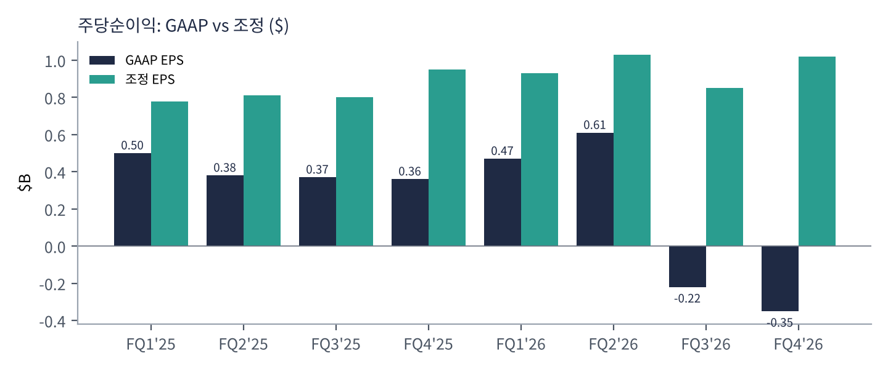
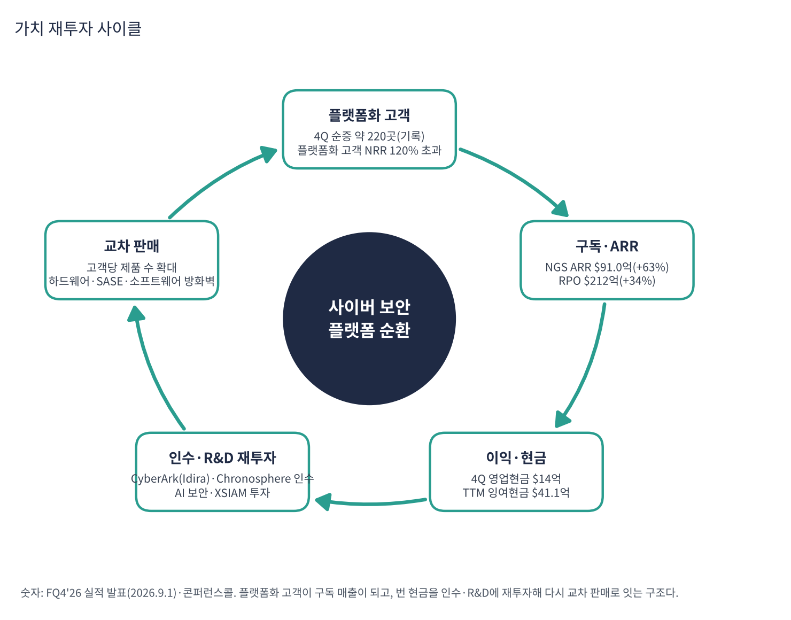

팔로알토 네트웍스는 방화벽·클라우드 보안·보안 운영·신원 보안을 하나의 플랫폼으로 파는 사이버 보안 회사다. 플랫폼화로 ARR이 빠르게 늘지만 GAAP 이익이 인수 비용에 눌려 있어 PER이 비정상적으로 높게 보이는 회사다.
| 항목 | 내용 |
|---|---|
| 종목 | Palo Alto Networks (PANW) · NASDAQ · 사이버 보안 · 캘리포니아 산타클라라 |
| 멀티플 | PER 628.8배(GAAP TTM, 왜곡) · P/S 22.96배 (11/13 종가 $322.24) |
| 최근 분기(FQ4'26, 7월 말) | 매출 $34.1억(+34%), 조정 EPS $1.02, NGS ARR $91.0억(+63%), RPO $212억 |
| 인수 | CyberArk(현 Idira), Chronosphere를 회사 역사상 최대 규모로 인수 완료 |
| 현금·부채 | 스캐너: 현금 $30.8억, 총차입금 $25.7억, TTM 잉여현금 $41.1억 |
| 직책 | 인물 | 역할·특징 |
|---|---|---|
| 회장·CEO | 니케시 아로라 | 플랫폼화 전략 설계자. 인수로 제품군을 넓히는 스타일 |
| CFO | 디팍 골레차 | 가이던스·마진 관리, 인수 통합 비용 설명 |
경영 스타일: '고객이 제품을 한 플랫폼으로 모으면 가격 혜택을 주고, 인수로 빈 곳을 채운다'. 4분기에 플랫폼화 순증 약 220곳을 기록했고, 2030 회계연도까지 NGS ARR $200억·플랫폼화 4,000곳 이상을 장기 목표로 유지했다.
네트워크 보안(SASE·소프트웨어·하드웨어 방화벽), 보안 운영(XSIAM), 신원(Idira), 관측(Chronosphere)을 한 곳에 묶는다.
AI가 공격 속도를 높이므로 실시간 통합 방어가 필요하다는 논리로 플랫폼 수요를 설명한다.
다음 실적발표(FQ1'27)는 세 가지 질문에 답하는 자리다.
질문 1. 플랫폼화가 ARR로 이어지는가?
| 확인할 숫자 | 좋아지면 | 나빠지면 |
|---|---|---|
| NGS ARR 가이던스 $95.4~95.6억(+63%), 현재 $91.0억 | 가이던스 안이면 ①플랫폼화 고리가 유지된다 | 하단 미달이면 인수 효과 밖의 성장이 둔화된 것이다 |
질문 2. 마진이 SaaS 믹스·메모리 비용을 견디는가?
| 확인할 숫자 | 좋아지면 | 나빠지면 |
|---|---|---|
| 총이익률 74.8%(-100bp), 비GAAP 영업이익률 29.6% | 총이익률이 74%대를 지키면 ③이익·현금 고리가 유지된다 | 74% 아래면 클라우드 호스팅·하드웨어 원가가 이익을 깎는다 |
질문 3. 인수 후에도 주당 이익이 유지되는가?
| 확인할 숫자 | 좋아지면 | 나빠지면 |
|---|---|---|
| 조정 EPS 가이던스 $0.96~0.98(직전 분기 $1.02) | 가이던스 상단이면 희석을 흡수한다 | 하단 미달이면 인수 비용이 PEG를 더 키운다 |
한 줄 판정 규칙: 첫 질문이 가이던스 안이면 약한 고리(PER 높은 구간의 성장 근거)가 풀리고, 마진 질문이 나빠지면 PEG 판단이 더 불리해진다.
일정: 2026-11-18 예정(트레이딩뷰 일정, 회사 확정 확인 필요). FQ1'27 가이던스는 매출 $33.0~33.1억이다.
| 분기 | 매출 | 순이익 | EPS | 조정 EPS | 특이 사항 |
|---|---|---|---|---|---|
| FQ1'25(24.10) | $21.4억 | $3.5억 | 0.50 | 0.78 | |
| FQ2'25(25.1) | $22.6억 | $2.7억 | 0.38 | 0.81 | |
| FQ3'25(25.4) | $22.9억 | $2.6억 | 0.37 | 0.80 | GAAP 흑자 전환 |
| FQ4'25(25.7) | $25.4억 | $2.5억 | 0.36 | 0.95 | |
| FQ1'26(25.10) | $24.7억 | $3.3억 | 0.47 | 0.93 | |
| FQ2'26(26.1) | $25.9억 | $4.3억 | 0.61 | 1.03 | |
| FQ3'26(26.4) | $30.0억 | $-1.8억 | -0.22 | 0.85 | |
| FQ4'26(26.7) | $34.1억 | $-2.8억 | -0.35 | 1.02 | GAAP 순손실(인수 관련 비용 영향 추정, 확인 필요) |


값은 트레이딩뷰 스캐너 분기 이력이다. 조정 EPS는 트레이딩뷰 Reported(비GAAP)다. FQ4'26 GAAP 순손실 원인은 인수 관련 비용으로 추정되나 공시로 확인하지 못했다(확인 필요). 분기 설비투자는 구하지 못했다.
흐름 요약: 매출이 FQ1'25 $21.4억에서 FQ4'26 $34.1억으로 늘었다. 인수 이후 GAAP EPS는 적자인데 조정 EPS는 $0.85~1.03 범위에서 움직인다.
| 항목 | 값 | 비고 |
|---|---|---|
| NGS ARR | $91.0억(+63%) | 회사 |
| RPO / cRPO | $212억 / $93억(+34%) | 회사 |
| 플랫폼화 순증 | 약 220곳 | 4Q 기록, NRR 120% 초과 |
| 하드웨어 비중 | 약 10% | CFO 언급(메모리 비용 부담) |
제품별 매출 비중 표는 이번에 구하지 못했다. 성장은 ARR 기반 구독과 SASE·소프트웨어 방화벽이 끌고, 하드웨어는 원가 부담이 있다.
팔로알토는 '고객의 보안 도구를 하나의 플랫폼으로 통합해 ARR을 키우는 것'을 목표로 한다.
| 축 | 최근 움직임 |
|---|---|
| 플랫폼화 | 4Q 순증 약 220곳, 장기 목표 4,000곳 이상 |
| 인수 | CyberArk(Idira), Chronosphere 인수 완료 |
| ARR | NGS ARR 장기 목표 $200억(회계연도 2030) |

| 이동평균 | 값 | 종가 대비 | 해석 |
|---|---|---|---|
| 5일선 | $327.32 | -1.6% | 현재가가 아래 |
| 20일선 | $350.91 | -8.2% | 현재가가 아래 |
| 50일선 | $367.50 | -12.3% | 현재가가 아래 |
| 100일선 | $358.00 | -10.0% | 현재가가 아래 |
| 200일선 | $277.23 | +16.2% | 현재가가 위 (+16%) |
주봉 흐름: 52주 고점 $432.32(10/6), 52주 저점 $139.57(2/24). 현재가 $322.24는 200일선 $277.23보다 위, 50일선 $367.50보다 아래에 있다.
| 규칙 | 기준 | 현재 값 | 신호 |
|---|---|---|---|
| 장기 추세 필터 | 종가 vs 200일선 | $322.24 > $277.23 | 매수 |
| 중장기 교차 | 50일선 vs 200일선 | $367.50 > $277.23 | 매수 |
| 단기 교차 | 20일선 vs 50일선 | $350.91 < $367.50 | 매도 |
| 돈키언 채널 | 55일 고가 $432.32 / 저가 $312.12 | 중간값 $372.22 아래 | 매도 |
| 1개월 모멘텀 | 21거래일 수익률 | -13.0% (기준 $370.27) | 매도 |
| 3개월 모멘텀 | 63거래일 수익률 | -14.2% (기준 $375.76) | 매도 |
| 6개월 모멘텀 | 126거래일 수익률 | +32.7% (기준 $242.83) | 매수 |
| 12개월 모멘텀 | 252거래일 수익률 | +53.4% (기준 $210.04) | 매수 |
| 종합 (8개 평균) | +0.00 | 중립 |
해석: 8개 신호 중 매수 4개, 매도 4개(점수 +0.00, 중립)다. 14일 ATR $20.06 (6.2%).
| 가격·조건 | 무엇이 바뀌나 | 의미 |
|---|---|---|
| 20일선이 50일선 위로 | 20/50 교차 | 매도 → 매수 |
| $372.22 돌파 | 돈키언 중간값 | 매도 → 매수 |
| $370.27 돌파 | 1개월 기준가 | 매도 → 매수 |
| $375.76 돌파 | 3개월 기준가 | 매도 → 매수 |
| $277.23 돌파 | 200일선 | 이탈하면 매수 → 매도 |
| 50일선이 200일선 위로 | 50/200 교차 | 이탈하면 매수 → 매도 |
| $242.83 돌파 | 6개월 기준가 | 이탈하면 매수 → 매도 |
| 구분 | 가격대 | 근거 |
|---|---|---|
| 저항 1 | $327.32 | 5일선 |
| 저항 2 | $350.91 | 20일선 |
| 지지 1 | $312.12 | 55일 저점 |
| 지지 2 | $277.23 | 200일선 |
점수는 +0.00(중립)다. 14일 ATR은 $20.06로 현재가의 6.2%다. 가까운 저항 $327.32을 종가로 넘는지와 가까운 지지 $312.12를 지키는지가 신호 전환의 기준이다. (내 가정, 매매 권유 아님)
| 악재 요인 | 내용 | 강도 |
|---|---|---|
| 밸류에이션 | GAAP PER 628.8배, 조정 PER 약 84배 | 높음 |
| 인수 통합 | CyberArk·Chronosphere 동시 통합, GAAP 적자 | 중간 |
| 마진 | 총이익률 74.8%(-100bp), 메모리 비용 | 중간 |
| 경쟁 | SASE 전환 경쟁(대체 규모 $4.5억 언급) | 중간 |
| 티커 | 회사 | PER(TTM) | PEG | P/S | EPS 성장(YoY) |
|---|---|---|---|---|---|
| PANW | 팔로알토 | 84.1배* | 5.7* | 22.96배 | +14.7%* |
| CRWD | 크라우드스트라이크 | 6,347.6배 | – | 44.49배 | – |
| FTNT | 포티넷 | 41.4배 | 1.59 | 12.21배 | +26% |
| ZS | 지스케일러 | 적자 | – | 9.33배 | -47% |
| CHKP | 체크포인트 | 17.7배 | – | 5.45배 | -9% |
| OKTA | 옥타 | 110.5배 | 1.16 | 10.62배 | +95% |
* PANW 첫 행 PEG·성장률은 조정 EPS 기준 내 계산이다. 트레이딩뷰 GAAP PER은 628.8배, PEG는 산출 불가다. CRWD·CHKP는 PEG가 없다.
팔로알토는 현금성 자산 $30.8억이 총차입금 $25.7억보다 커 순현금 약 $5.1억이고, TTM 잉여현금이 $41.1억이다. 인수 후에도 현금흐름이 이익 대비 훨씬 크다.
| 지표 | 값 | 계산·출처 | 해석 |
|---|---|---|---|
| 현금 | $30.8억 | 스캐너 | 차입금보다 많음 |
| 총차입금 | $25.7억 | 스캐너 | 순현금 약 $5.1억(내 계산) |
| TTM 잉여현금흐름 | $41.1억 | 스캐너 | TTM 매출 $114.8억 대비 약 36%(내 계산) |
| TTM EBITDA | $22.9억 | 스캐너 | GAAP 기준이라 현금흐름보다 작음 |
| 기준 | 값 | 비고 |
|---|---|---|
| P/S (TTM) | 22.96배 | 스캐너 |
| 동종 | CRWD 44.5, FTNT 12.2, ZS 9.3, CHKP 5.5, OKTA 10.6 | 11/13 스캐너 |
해석: P/S 23배는 보안 동종(FTNT 12배, ZS 9배)보다 높고 CRWD(44배)보다 낮다. 매출이 인수로 커진 상태라 P/S만으로 싸고 비싼 것을 가르기 어렵다.
| 지표 | 값 | 판정 |
|---|---|---|
| PER (GAAP TTM) | 628.8배 | GAAP 이익이 인수 비용에 눌려 의미 없음 |
| PER (조정 TTM) | 약 84.1배 | $322.24 ÷ 최근 4분기 조정 EPS $3.83(내 계산) |
| EV / EBITDA | – | EV 기반 계산은 이 양식에서 생략 |
| TTM 잉여현금 마진 | 약 36% | $41.1억 ÷ 매출 $114.8억(내 계산) |
| 방식 | PER | EPS 성장률 | PEG | 판정 |
|---|---|---|---|---|
| 트레이딩뷰 (GAAP TTM) | 628.8배 | -68.0% | 산출 불가 | GAAP EPS 감소 |
| 조정 EPS (내 계산) | 84.1배 | +14.7% | 약 5.7 | 최근 4분기 $3.83 ÷ 직전 4분기 $3.34 |
판정: GAAP은 적자로 PEG를 낼 수 없고, 조정 EPS 기준 PEG는 약 5.7로 1.0을 크게 넘어 투자 적격 구간(≤1.0)이 아니다. ARR 성장(+63%)이 EPS에 아직 반영되지 않았다는 점이 확인 지점이다.

팔로알토의 사이클은 플랫폼화 고객 → 구독·ARR → 이익·현금 → 인수·R&D 재투자 → 교차 판매다. 번 현금으로 인수와 R&D에 다시 쓰고, 넓어진 제품군으로 같은 고객에게 더 판다.
| 고리 | 현재 숫자 | 고리 강도 | 약해지는 신호 |
|---|---|---|---|
| ① 플랫폼화 고객 | 4Q 순증 약 220곳 | 강함 | 순증 속도 둔화 |
| ② 구독·ARR | NGS ARR $91.0억(+63%) | 강함 | ARR 증가율이 가이던스 하회 |
| ③ 이익·현금 | TTM 잉여현금 $41.1억 | 강함 | 하드웨어·호스팅 원가 |
| ④ 인수·R&D 재투자 | CyberArk·Chronosphere | 보통 | GAAP 적자·인수 비용 |
| ⑤ 교차 판매 | 플랫폼화 NRR 120% 초과 | 보통 | SASE 경쟁·가격 압박 |
구조: ①②③은 강하지만 ④에서 GAAP 이익이 적자라 주가 판단의 근거가 조정 EPS에 쏠린다. 인수 효과가 EPS로 확인되지 않으면 이 고리의 신뢰도가 낮아진다.